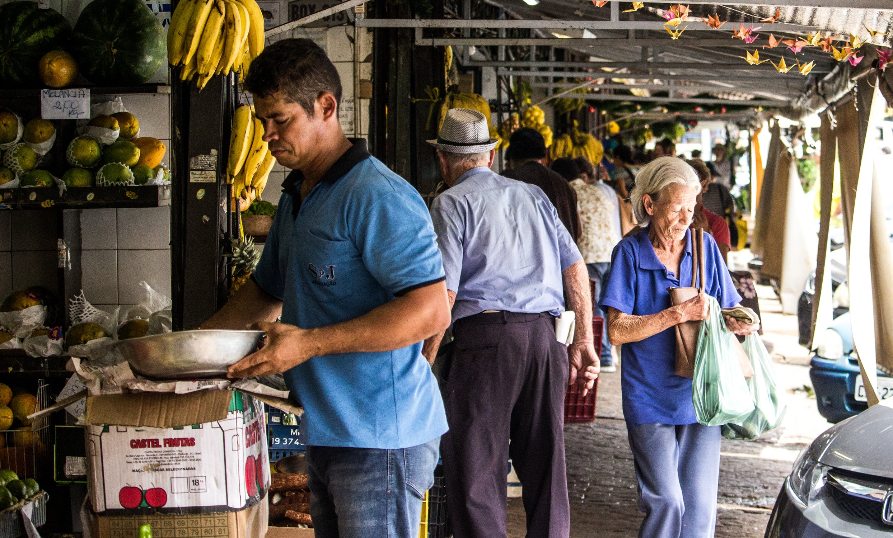

After she gives you bread, you start to purr and rub against her leg happily. You look up and see her starting to tear up before she leans down to pet you. She gives you more bread, and you decide to hang out at the stand for awhile. Her kid in charge of giving out samples comes over to pet you every once in awhile (while slipping you the occassional sample) and you are truly living the good life. The sun is starting to set though and her and her kid start to pack up the stand. You see them turn to you right before they walk back to their van for the last time. Do you follow them, or continue wandering the city?